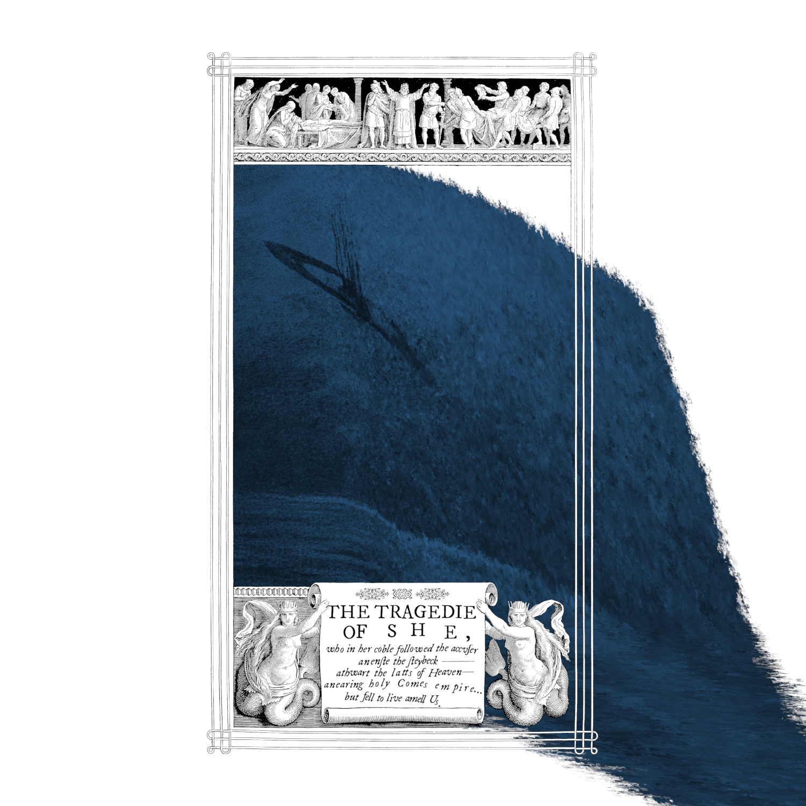

april drowne
“Sacred Blue”
created 2019–2025—three albums—one work
i—holy Comes empire
1. Introitus (Sacred Blue Theme).mp3 2. Comes the Isle.mp3
ii—Banzai! Myriadet
3. Myriadet.mp3iii—on Becoming a Shatterlark
4. Coming Down Slow Estate.mp3 5. to the Empire Plasmatic!.mp3 6. 256 A.M. Eternal.mp3 7. the Swirl.mp3
efa.merrus@gmail.com